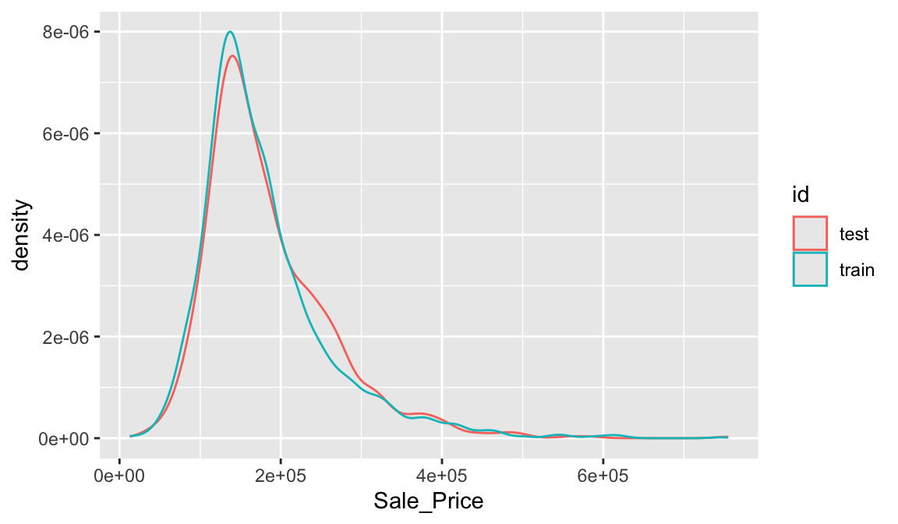

33 Lesson 7a: First model with Tidymodels
This lesson is designed to get you acquainted with building predictive models using the tidymodels construct. We’ll focus on the process of splitting our data for improved generalizability, using Tidymodel’s parsnip package for constructing our models, along with yardstick to measure model performance.
The tidymodels framework is a collection of packages for modeling and machine learning using tidyverse principles.
33.1 Learning objectives
By the end of this lesson you will be able to:
- Split your data into training and test sets.
- Instantiate, train, fit, and evaluate a basic model.
33.2 Prerequisites
For this lesson we’ll use the tidymodels package and we’ll use data from the modeldata package.
library(tidymodels)
library(modeldata)The two data sets we’ll use are ames and attrition. You’ve seen the ames data plenty of times up to this point but the attrition data is new. You can read about the attrition data at ?attrition. Long story short, it is a data set that contains employee attrition information and allows us to illustrate classification modeling techniques (whereas ames is a regression problem).
data(ames, attrition)33.3 Data splitting
A major goal of the machine learning process is to find an algorithm \(f\left(X\right)\) that most accurately predicts future values (\(\hat{Y}\)) based on a set of features (\(X\)). In other words, we want an algorithm that not only fits well to our past data, but more importantly, one that predicts a future outcome accurately. This is called the generalizability of our algorithm. How we “spend” our data will help us understand how well our algorithm generalizes to unseen data.
To provide an accurate understanding of the generalizability of our final optimal model, we can split our data into training and test data sets:
- Training set: these data are used to develop feature sets, train our algorithms, tune hyperparameters, compare models, and all of the other activities required to choose a final model (e.g., the model we want to put into production).
- Test set: having chosen a final model, these data are used to estimate an unbiased assessment of the model’s performance, which we refer to as the generalization error.

Figure 33.1: Splitting data into training and test sets.
Given a fixed amount of data, typical recommendations for splitting your data into training-test splits include 60% (training)–40% (testing), 70%–30%, or 80%–20%. Generally speaking, these are appropriate guidelines to follow; however, it is good to keep the following points in mind:
- Spending too much in training (e.g., \(>80\%\)) won’t allow us to get a good assessment of predictive performance. We may find a model that fits the training data very well, but is not generalizable (overfitting).
- Sometimes too much spent in testing (\(>40\%\)) won’t allow us to get a good assessment of model parameters.
Other factors should also influence the allocation proportions. For example, very large training sets (e.g., \(n > 100\texttt{K}\)) often result in only marginal gains compared to smaller sample sizes. Consequently, you may use a smaller training sample to increase computation speed (e.g., models built on larger training sets often take longer to score new data sets in production). In contrast, as \(p \geq n\) (where \(p\) represents the number of features), larger samples sizes are often required to identify consistent signals in the features.
The two most common ways of splitting data include simple random sampling and stratified sampling.
33.3.1 Simple random sampling
The simplest way to split the data into training and test sets is to take a simple random sample. This does not control for any data attributes, such as the distribution of your response variable (\(Y\)).
Sampling is a random process so setting the random number generator
with a common seed allows for reproducible results. Throughout this
course we’ll often use the seed 123 for reproducibility but
the number itself has no special meaning.
# create train/test split
set.seed(123) # for reproducibility
split <- initial_split(ames, prop = 0.7)
train <- training(split)
test <- testing(split)
# dimensions of training data
dim(train)
## [1] 2051 74With sufficient sample size, this sampling approach will typically result in a similar distribution of \(Y\) (e.g., Sale_Price in the ames data) between your training and test sets, as illustrated below.
train %>%
mutate(id = 'train') %>%
bind_rows(test %>% mutate(id = 'test')) %>%
ggplot(aes(Sale_Price, color = id)) +
geom_density()
33.3.2 Stratified sampling
If we want to explicitly control the sampling so that our training and test sets have similar \(Y\) distributions, we can use stratified sampling. This is more common with classification problems where the response variable may be severely imbalanced (e.g., 90% of observations with response “Yes” and 10% with response “No”). However, we can also apply stratified sampling to regression problems for data sets that have a small sample size and where the response variable deviates strongly from normality. With a continuous response variable, stratified sampling will segment \(Y\) into quantiles and randomly sample from each.
To perform stratified sampling we simply apply the strata argument in initial_split.
set.seed(123)
split_strat <- initial_split(attrition, prop = 0.7, strata = "Attrition")
train_strat <- training(split_strat)
test_strat <- testing(split_strat)The following illustrates that in our original employee attrition data we have an imbalanced response (No: 84%, Yes: 16%). By enforcing stratified sampling, both our training and testing sets have approximately equal response distributions.
# original response distribution
table(attrition$Attrition) %>% prop.table()
##
## No Yes
## 0.83878 0.16122
# response distribution for training data
table(train_strat$Attrition) %>% prop.table()
##
## No Yes
## 0.83949 0.16051
# response distribution for test data
table(test_strat$Attrition) %>% prop.table()
##
## No Yes
## 0.8371 0.162933.4 Building models
The R ecosystem provides a wide variety of ML algorithm implementations. This makes many powerful algorithms available at your fingertips. Moreover, there are almost always more than one package to perform each algorithm (e.g., there are over 20 packages for fitting random forests). There are pros and cons to this wide selection; some implementations may be more computationally efficient while others may be more flexible. This also has resulted in some drawbacks as there are inconsistencies in how algorithms allow you to define the formula of interest and how the results and predictions are supplied.
Fortunately, the tidymodels ecosystem is simplifying this and, in particular, the Parsnip package provides one common interface to train many different models supplied by other packages. Consequently, we’ll focus on building models the tidymodels way.
To create and fit a model with parsnip we follow 3 steps:
- Create a model type
- Choose an “engine”
- Fit our model
Let’s illustrate by building a linear regression model. For our first model we will simply use two features from our training data - total square feet of the home (Gr_Liv_Area) and year built (Year_Built) to predict the sale price (Sale_Price).
We can use tidy() to get results of our model’s
parameter estimates and their statistical properties. Although the
summary() function can provide this output, it gives the
results back in an unwieldy format. Many models have a
tidy() method that provides the summary results in a more
predictable and useful format (e.g. a data frame with standard column
names)
lm_ols <- linear_reg() %>%
fit(Sale_Price ~ Gr_Liv_Area + Year_Built, data = train)
tidy(lm_ols)
## # A tibble: 3 × 5
## term estimate std.error statistic p.value
## <chr> <dbl> <dbl> <dbl> <dbl>
## 1 (Intercept) -2157423. 69234. -31.2 8.09e-175
## 2 Gr_Liv_Area 94.4 2.12 44.4 2.54e-302
## 3 Year_Built 1114. 35.5 31.4 5.30e-177Now, you may have noticed that I only applied two of the three steps I mentioned previously:
- Create a model type
Choose an “engine”- Fit our model
The reason is because most model objects (linear_reg() in this example) have a default engine. linear_reg() by default uses lm for ordinary least squares. But we can always change the engine. For example, say I wanted to use keras to perform gradient descent linear regression, then I could change the engine to keras but use the same code workflow.
For this code to run successfully on your end you need to have the keras and tensorflow packages installed on your machine. Depending on your current setup this could be an easy process or you could run into problems. If you run into problems don’t fret, this is primarily just to illustrate how we can change engines.
lm_sgd <- linear_reg() %>%
set_engine('keras') %>%
fit(Sale_Price ~ Gr_Liv_Area + Year_Built, data = train)
When we talk about ‘engines’ we’re really just referring to packages
that provide the desired algorithm. Each model object has different
engines available to use and they are all documented. For example check
out the help file for linear_reg (?linear_reg)
and you’ll see the different engines available (lm, brulee, glm, glmnet,
etc.)
The beauty of this workflow is that if we want to explore different models we can simply change the model object. For example, say we wanted to run a K-nearest neighbor model. We can just use nearest_neighbor().
In this example we have pretty much the same code as above except we added the line of code set_mode(). This is because most algorithms require you to specify if you are building a regression model or a classification model.
When you run this code you’ll probably get an error message saying
that “This engine requires some package installs: ‘kknn’.” This
just means you need to install.packages(‘kknn’) and then
you should be able to successfully run this code.
knn <- nearest_neighbor() %>%
set_engine("kknn") %>%
set_mode("regression") %>%
fit(Sale_Price ~ Gr_Liv_Area + Year_Built, data = train)You can see all the different model objects available at https://parsnip.tidymodels.org/reference/index.html
33.4.1 Knowledge check
-
If you haven’t already done so, create a 70-30 stratified train-test
split on the
attritiondata (note:Attritionis the response variable). -
Using the
logistic_reg()model object, fit a model usingAge,DistanceFromHome, andJobLevelas the features. - Now train a K-nearest neighbor model using the ‘kknn’ engine and be sure to set the mode to be a classification model.
33.5 Making predictions
We have fit a few different models. Now, if we want to see our predictions we can simply apply predict() and feed it the data set we want to make predictions on. Here, we can see the predictions made on our training data for our ordinary least square linear regression model.
lm_ols %>% predict(train)
## # A tibble: 2,051 × 1
## .pred
## <dbl>
## 1 217657.
## 2 214276.
## 3 223425.
## 4 260324.
## 5 109338.
## 6 195106.
## 7 222217.
## 8 126175.
## 9 98550.
## 10 120811.
## # … with 2,041 more rowsAnd here we get the predicted values for our KNN model.
knn %>% predict(train)
## # A tibble: 2,051 × 1
## .pred
## <dbl>
## 1 194967.
## 2 192240
## 3 174220
## 4 269760
## 5 113617.
## 6 173672
## 7 174820
## 8 120796
## 9 114560
## 10 121346
## # … with 2,041 more rows33.6 Evaluating model performance
It is important to understand how our model is performing. With ML models, measuring performance means understanding the predictive accuracy – the difference between a predicted value and the actual value. We measure predictive accuracy with loss functions.
There are many loss functions to choose from when assessing the performance of a predictive model, each providing a unique understanding of the predictive accuracy and differing between regression and classification models. Furthermore, the way a loss function is computed will tend to emphasize certain types of errors over others and can lead to drastic differences in how we interpret the “optimal model”. Its important to consider the problem context when identifying the preferred performance metric to use. And when comparing multiple models, we need to compare them across the same metric.
33.6.1 Regression models
The most common loss functions for regression models include:
MSE: Mean squared error is the average of the squared error (\(MSE = \frac{1}{n} \sum^n_{i=1}(y_i - \hat y_i)^2\))10. The squared component results in larger errors having larger penalties. Objective: minimize
RMSE: Root mean squared error. This simply takes the square root of the MSE metric (\(RMSE = \sqrt{\frac{1}{n} \sum^n_{i=1}(y_i - \hat y_i)^2}\)) so that your error is in the same units as your response variable. If your response variable units are dollars, the units of MSE are dollars-squared, but the RMSE will be in dollars. Objective: minimize
Let’s compute the RMSE of our OLS regression model. Remember, we want to assess our model’s performance on the test data not the training data since that gives us a better idea of how our model generalizes. To do so, the following:
- Makes predictions with our test data,
- Adds the actual
Sale_Pricevalues from our test data, - Computes the RMSE.
lm_ols %>%
predict(test) %>%
bind_cols(test %>% select(Sale_Price)) %>%
rmse(truth = Sale_Price, estimate = .pred)
## # A tibble: 1 × 3
## .metric .estimator .estimate
## <chr> <chr> <dbl>
## 1 rmse standard 45445.The RMSE value suggests that, on average, our model mispredicts the expected sale price of a home by about $45K.
33.6.2 Classification models
There are many loss functions used for classification models. For simplicity we’ll just focus on the overall classification accuracy. I’ll illustrate with the attrition data. Here, we build a logistic regression model that seeks to predicts Attrition based on all available features.
In R, using a “.” as in Attrition ~ . is a shortcut for
saying use all available features to predict Attrition.
We then follow the same process as above to make predictions on the test data, add the actual test values for Attrition, and then compute the accuracy rate.
logit <- logistic_reg() %>%
fit(Attrition ~ ., data = train_strat)
logit %>%
predict(test_strat) %>%
bind_cols(test_strat %>% select(Attrition)) %>%
accuracy(truth = Attrition, estimate = .pred_class)
## # A tibble: 1 × 3
## .metric .estimator .estimate
## <chr> <chr> <dbl>
## 1 accuracy binary 0.87633.7 Exercises
For this exercise we’ll use the Boston housing data set. The Boston Housing data set is derived from information collected by the U.S. Census Service concerning housing in the area of Boston MA. Originally published in Harrison Jr and Rubinfeld (1978), it contains 13 attributes to predict the median property value.
Data attributes:
- problem type: supervised regression
-
response variable:
medvmedian value of owner-occupied homes in USD 1000’s (i.e. 21.8, 24.5) - features: 13
- observations: 506
- objective: use property attributes to predict the median value of owner-occupied homes
Modeling tasks:
- Import the Boston housing data set (boston.csv) and split it into a training set and test set using a 70-30% split.
- How many observations are in the training set and test set?
-
Compare the distribution of
cmedvbetween the training set and test set. -
Fit a linear regression model using all available features to
predict
cmedvand compute the RMSE on the test data. -
Fit a K-nearest neighbor model that uses all available features to
predict
cmedvand compute the RMSE on the test data. - How do these models compare?
References
This deviates slightly from the usual definition of MSE in ordinary linear regression, where we divide by \(n-p\) (to adjust for bias) as opposed to \(n\).↩︎